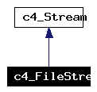

Main Page
|
Class Hierarchy
|
Alphabetical List
|
Class List
|
Directories
|
File List
|
Class Members
|
File Members
c4_FileStream Class Reference
A file stream can be used to serialize using the stdio library.
More...
#include <
mk4io.h
>
Inheritance diagram for c4_FileStream:

[
legend
]
List of all members.
Public Member Functions
virtual int
Read
(void *buffer_, int length_)
Fetch some bytes sequentially.
virtual bool
Write
(const void *buffer_, int length_)
Store some bytes sequentially.
Detailed Description
A file stream can be used to serialize using the stdio library.
The documentation for this class was generated from the following files:
mk4io.h
fileio.cpp
Metakit C++ API Reference -
http://www.equi4.com/metakit.html
- extracted with
Doxygen